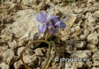

KER GAWL.")
 SEBAST. & MAURI var. bulbocodium")
| PHRYGANA | Fauna | Flora | Galles | liste des espèces |
contact -
info - commentaires phrygana1 (at) gmail.com |
| Particularités crétoises | nouveautés | Mines | ressources naturelles |
| Flore de Crète: les Iridaceae A. L. JUSSIEU |
|
|
|
|
 |
|
|
| Crocus tournefortii | Gladiolus italicus | Moraea mediterranea | Moraea sisyrinchium | Romulea bulbocodium |
| 15 août 2012 |
| © paul fontaine -- © Phrygana.eu 2007 -- 2013 |